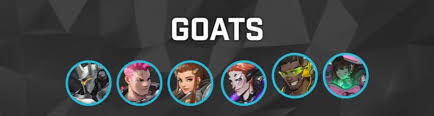

About
Below is the GOATs team composition. This composition was insanely popular as it effectively removed the need for damage characters. This innovation was a detriment to the overall competitive landscape because it stifled creativity and it was also not weakened by the developers. This compositions was extremely successful because of its insane damage output and heal output. Continuing from my point before, supports were an integral part of this meta, being able to support the team with healing, damage boost, and even damage all at the same time. At this time, tanks were also doing a lot of damage as well as being able to take a lot of damage with sustain abilities. This effectively removed the damage role, as it had no utility as well as no insane sustain factor. In the 2-2-2 forced role composition (2 tank, 2 damage, 2 support), your choice of support is usually the most impactful choice of the match. With the way most team-based games are designed, supports often have negating abilities alongside their healing/cleansing abilities. This means that enemies that have a negation need a friendly cleanse, and so on. This restricts composition creativity, as there is a competitive disadvantage from not picking the right character. This is called counterpicking, and is an extremely potent strategy of always countering what the enemy picks before you even play the game.
My Favorite Games
- Pokemon Trading Card Game Pocket
- League of Legends
- Overwatch
Contact Information
Email: rxie28@gmail.com